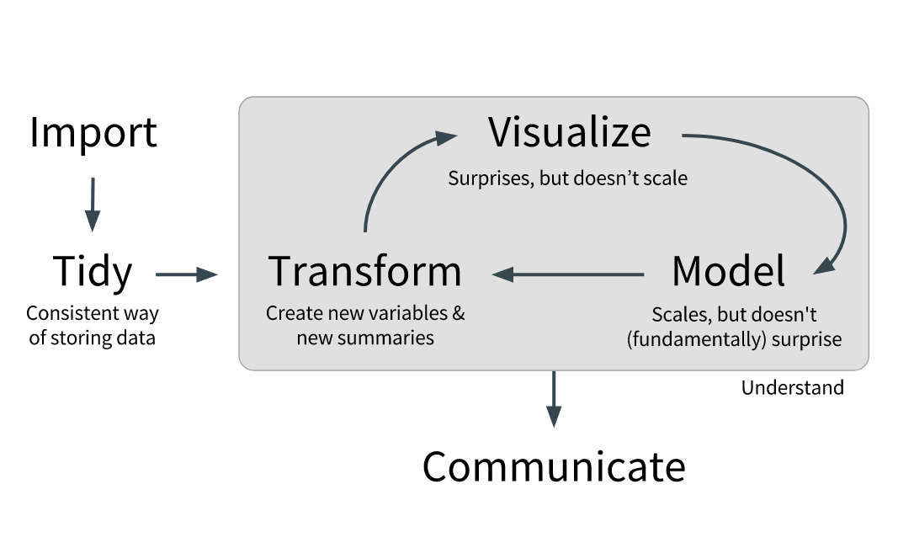

Introduction
Here we provide the raw datasets, the scripts and the clean datasets used in the Observatory of Economic Complexity. We use the Tidy Data principles exposed by Hadley Wickham.
If you have questions send me an email to mvargas [at] dcc.uchile.cl.
In the final datsets we provide:
- Each variable forms a column
- Each observation forms a row
- Each type of observational unit forms a table
This is Codd’s 3rd normal form.
Raw Data
Our raw data comes from the UN Comtrade bulk data API.
We cleaned this data according to Tidy Data principles. This diagram represents what we did:

Clean Data
The difference between the clean data and the raw data we both provide is that here we divided the original datasets in different parts by commodity code lenght, we used wide format instead of long format, and we tried to fill as many gaps as possible.
For each NA or 0 value we tried to replace it in this way: If country A reported NA or 0 exports (imports) of product B to (from) country C, then we searched what country C reported of imports (exports) of product B from (to) country A. To indicate which rows we included a column named marker with this labels:
- 1 = imports with replacements
- 2 = exports with replacements
- 3 = imports and exports with replacements
- NA = no replacements needed
Methodology, scripts and datasets
Detailed description of all the datasets and steps performed
Download all the datasets, from raw to final tables
Reproducible Research
This project is reproducible.
UPLOAD LINKS
The only reproducibility flaw is that the file 0_do_all.R inside comtrade_data folder downloads data from UN Comtrade API and that API needs a token. You’ll need your own token because we cannot provide or own or it will violate UN Comtrade’s Terms of Service.
Besides R packages you’ll need 7z installed on your system as its the compression tool we use in the scripts.
The system and R packages used in this project are:
R version 3.4.1 (2017-06-30)
Platform: x86_64-pc-linux-gnu (64-bit)
locale: LC_CTYPE=en_US.UTF-8, LC_NUMERIC=C, LC_TIME=en_US.UTF-8, LC_COLLATE=en_US.UTF-8, LC_MONETARY=en_US.UTF-8, LC_MESSAGES=en_US.UTF-8, LC_PAPER=en_US.UTF-8, LC_NAME=C, LC_ADDRESS=C, LC_TELEPHONE=C, LC_MEASUREMENT=en_US.UTF-8 and LC_IDENTIFICATION=C
attached base packages:
- stats
- graphics
- grDevices
- utils
- datasets
- methods
- base
other attached packages:
- pander(v.0.6.0)
- bit64(v.0.9-7)
- bit(v.1.1-12)
- tidyr(v.0.6.3)
- dtplyr(v.0.0.2)
- httr(v.1.2.1)
- data.table(v.1.10.4)
- dplyr(v.0.7.1)
- readxl(v.1.0.0)
- jsonlite(v.1.5)
loaded via a namespace (and not attached):
- Rcpp(v.0.12.11)
- knitr(v.1.16)
- bindr(v.0.1)
- magrittr(v.1.5)
- R6(v.2.2.2)
- rlang(v.0.1.1)
- stringr(v.1.2.0)
- tools(v.3.4.1)
- htmltools(v.0.3.6)
- yaml(v.2.1.14)
- rprojroot(v.1.2)
- digest(v.0.6.12)
- assertthat(v.0.2.0)
- tibble(v.1.3.3)
- bindrcpp(v.0.2)
- prettydoc(v.0.2.0)
- glue(v.1.1.1)
- evaluate(v.0.10.1)
- rmarkdown(v.1.6)
- stringi(v.1.1.5)
- compiler(v.3.4.1)
- cellranger(v.1.1.0)
- backports(v.1.1.0)
- pkgconfig(v.2.0.1)
References
Simoes, A. (2012). The Observatory (Unpublished master’s thesis). MIT Media Lab, Cambridge.
Hidalgo, Hausmann, et al. (2014). The atlas of economic complexity: Mapping paths to prosperity. MIT Press.
Wickham, H. (2014). Tidy data. Journal of Statistical Software, 59(10), 1-23. Chicago.
Codd, E. F. (1990). The relational model for database management: version 2. Addison-Wesley.